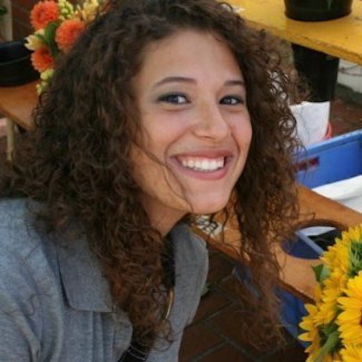
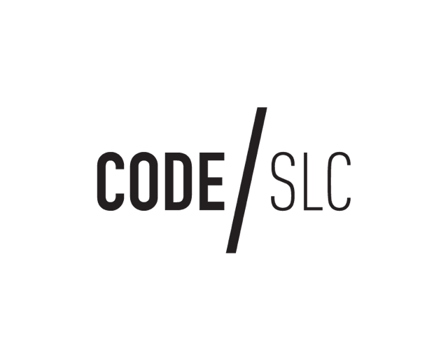

Three Local Women Killing It In Tech

Technology is a wide rapidly growing market, creating jobs for hundreds of individuals all over the world. V School is happy to be part of this emerging job creation source; continually providing employment for our students at a 99% placement rate. Exciting news for everyone in tech, especially women. Though technology has spent years and even decades carrying a masculine energy and primarily masculine employment ratio, technology is getting made over.
Women are breaking into the scene with more force than ever; creating products that no one ever thought possible in industries no one expected. The examples are endless; from basic development to high tech in fashion, women are coding success for themselves all over the world. A few of our fave women in tech crushing it are:
Kira Booth: Tech Lead at Qualtrics Having only been in the industry for 2.5 years, Kira is making big strides in her career. Especially for a 24 year old! On her second promotion at this large company, she moved away from her original career in architecture as a draftsperson to software engineering because she wanted to find a path that could combine her mathematical skills and ability to think logically with creativity. Day to day, she meets with her direct reports, review bugs and feature requests, operational metrics such as speed and failures in our system, and most days she manages to squeeze in some coding.
Photographer: David Gonzalez What is your favorite piece of current technology? The pieces of technology that make my job easiest these days are our homegrown internal service that provides real time dashboarding of my servers load, memory usage, CPU usage, etc. and Sumologic which is a third-party logging service which allows me to create and review dashboards that give me insight to what our customers across the world are doing with our product and to some extent what their experience is. Lyza Nau: Founder of Girl Develop It! In Provo, UT An inspiration to entrepreneurial women everywhere, this girl knows how to get it. Lyza is the Founder for Provo Girl Develop it. She became interested in Web Development in 2008 when she took on her first paid website job without knowing a line of code. She saw it as a opportunity to learn and get paid at the same time. That later lead her down the path to the Digital Media field with an emphasis in Web Development and opened her eyes to several area’s in Digital Media and Design. Lyza is also working on completing a Bachelor of Science Degree in Computer Information Technology. She enjoys working as a Web Designer/front End Development. Her goal is empowering women in the field of Tech and teaching women how to Code, mainly because the support was not there for her when she was learning. Lyza believes helping women learn to code is giving them the power to change the world. What is your favorite piece of current technology? I absolutely love smart phones. I don’t know how I would live without mine. It’s like a mini computer in the palm of my hand. I love how I can make calls, take pics, record videos, access emails, edit files, surf the web and have apps for all types of things I need in my life! The Smart Phone is my favorite piece of current technology today! Sariah Masterson: Program Director at V School Originally wanting to get started in Social Media, she found herself in the boot camp space; creating processes for employees, running classes, sales, and conducting marketing. She was introduced to the world of coding during her experience at verisage when she was assigned some Quality Assurance work. She tested a few of Verisage’s client products for their developers and learned how to report bugs to developers and practice agile development. Her personal passion is women and girls and minorities — being a Hispanic Woman herself. She is now pursuing a Masters Degree in Cyber Security on the side. What is your favorite piece of current technology? The internet. Technology is a universal language right now in the world and it’s bringing so many of us together that never would have met otherwise. I think that’s pretty cool…
Best Places To Get A Drink In Salt Lake City

“Turn down for what?” is the only appropriate attitude to get any kind of drunk in Utah. Booze here are built weak; creating quite the conundrum for bar goers in our majestic state. One must make a decision to either commit to the mellow one drink maximum or all out bender. Because, let’s face it, if you want to get some results, three drinks just won’t cut it. So, whether you’re a midnight feaster, a last train sprinter, Snapchat sender or coat-check skipper there is a bar for you:
Bar X — Small with a vintage, almost speak-easy vibe (perhaps a style that’s lasted since it’s men only days) this bar has been one of the best for years. If out-of-towners need to know where to go? This is where anyone would send them first. Not only is it one of SLC’s best it’s one of the oldest in the city. Perhaps that’s why the mounted tv’s in the corner play vintage movies, to pay homage to the bar’s respectable age. The drink selection is wide and varied, therefore no matter what your taste you’ll find something to like. In a big group? No problem. There is a drink here for everyone. And, if things get a little rowdy? Well, have a good time! What To Drink: A Moscow Mule.
Whiskey Street — If you’re a whiskey connoisseur this is the place for you. Touting widest variety of whiskey that any local bar has to offer, they bring a whole new meaning to their given name. Built long and narrow, much like a long street, this bar is a favorite amongst (according to their website) “downtown executives and hip urban locals.” Which, is right on the nose. Should you walk in you’ll find white collars with loosened ties, sleek wing tips, and women on-trend. What To Drink: Whiskey On The Rocks.
Beerhive — The place for beer. Hands down. You want some beer? They have so many different kinds your head will spin. And, you can have one of the best bratwurst in town to help wash down that beer. The food is reasonably priced, really freakin’ delicious (especially if you’ve got those midnight-tipsy-munchies) and a perfect combo with the drinks on tap. Awesome for big groups, the lunch room style seating allows for collaboration amongst groups and strangers alike. Board games are provided for a long sit-down with friends. What to Drink: Weisse, Weisse, Baby.
Copper Common — Hungry? Sharing the kitchen with Copper Common next door, this bar has the perfect menu to start the night off with full dishes that delight the tastebuds. The burger in particular is out of this world amazing. Plus, Monday thru Wednesday it’s only ten dollars. Which, if you know how good that burger is, is a big deal. The drinks are varied providing both strong liquors for those looking to make a dent in their state of mind as well as mellow drinks to sip on all night. What To Drink: Elqui Fix.
The Red Door — This is the perfect cocktail lounge for a night out. If you’re looking to celebrate a special occasion or just be fancy these cocktails will make you feel ritzy AF. The vibe is swinging 20’s that has red splashed all over it with the obvious red door as entry and red decor all over the walls. Gatsby himself, we’re sure, would have hung out here with business associates or to impress his girl. Not to mention a modern Gatsby would love the contemporary twist on this 20’s style lounge. If you’re looking to lounge for a while this is the place to be. What To Drink: Cocaine Lady.
Coding is the language that is bridging the technology, gender and diversity gap faster than just about any one thing.
For the first time, passionate / tech savvy people can invest less time + less resources and become a full-stack, computer engineer.
At V School our graduates are finding jobs as junior-level engineers, 27 days after graduating! These student outcomes lead the country for Developer Bootcamps.
While attending V School’s 12 week JavaScript immersive in Salt Lake City Utah, our students take advantage of FREE student housing.
Our housing is downtown + close to campus, and right in the heart-of-things.
Let us indulge you on the many reasons students are choosing to move to the beautiful Wasatch Mountains for 12 weeks, while learning to code.
VS brings you Code SLC //